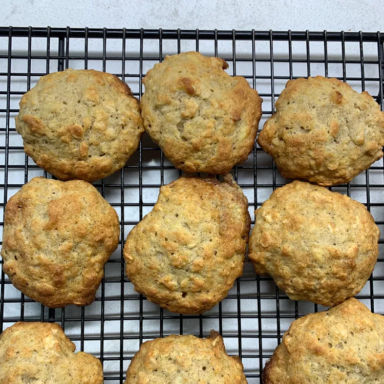

Banana Oatmeal Cookie

Description
This banana oatmeal cookie recipe has been handed down in my family for generations. It's a good way to use
overripe bananas. It's also a moist cookie that travels well either in the mail or car. This is usually the
first cookie to disappear at my house.
Ingredients
- 1 ½ cups all-purpose flour
- 1 teaspoon salt
- ¾ teaspoon ground cinnamon
- ½ teaspoon baking soda
- ¼ teaspoon ground nutmeg
- 1 cup white sugar
- ¾ cup shortening
- 1 ¾ cups quick-cooking oats
- 1 cup mashed bananas
- ½ cup chopped nuts
- ½ cup chopped nuts
Steps
- Preheat the oven to 400 degrees F (200 degrees C).
- Sift flour, salt, cinnamon, baking soda, and nutmeg together into a bowl.
- Beat sugar and shortening together in a separate large bowl with an electric mixer until light and fluffy.
Add oatmeal, banana, nuts, and egg; beat well. Add in flour mixture; mix well.
- Drop teaspoonfuls of dough onto ungreased cookie sheets.
- Bake in the preheated oven until edges turn lightly brown, about 15 minutes. Cool on a wire rack. Store in
an airtight container.